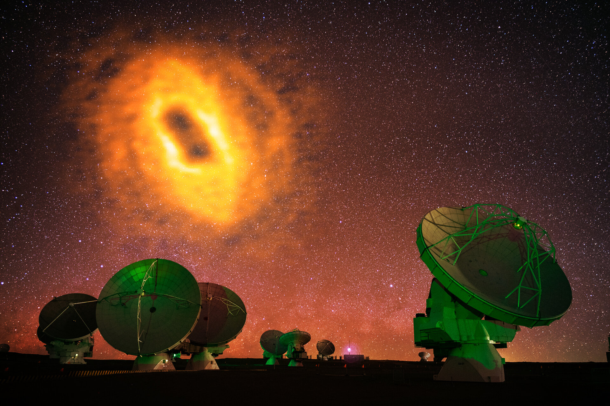
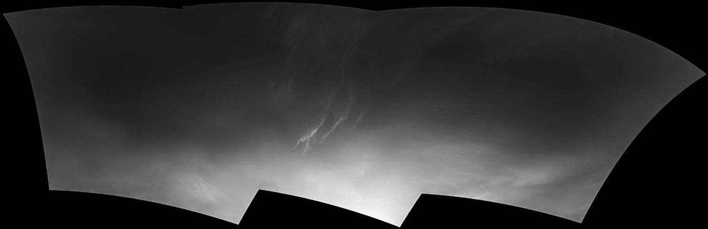
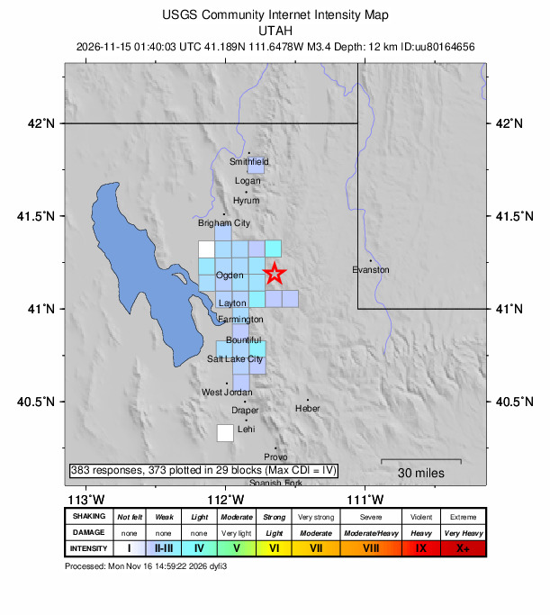

FROM OUR DESK — THE GUMROAD STORE
Digital binders, planners, and small-business packs, made by the same desk that writes these stories. Instant downloads; every purchase keeps this page running. 31 products are live, including:
- Household Emergency Binder — $13
- Household Inventory & Insurance Record Binder — $14
- Dinner, Handled — $19
- Small Landlord Tenant Screening & Move-In Pack — $19
- PostReady — from $25
- ReviewReply — from $29

November 25, 2026
Four Years Later, We Can Finally See the Crater Humanity Left on an Asteroid
ESA's Hera spacecraft has arrived at Dimorphos and photographed what NASA's DART impact really did — a stadium-size crater that flattened one face of the asteroid, sent it tumbling, and left hundreds of boulders circling the pair.
READ THE STORY →
November 25, 2026
On Its Way to Mars, a NASA Spacecraft Looked Back at Earth
NASA's twin ESCAPADE spacecraft used Earth for a gravity slingshot on their 10-month trip to Mars — and one of them photographed the Western Hemisphere from about 38,500 miles away, three hours after closest approach.
READ THE STORY →
November 23, 2026
A Black Hole Blinked: A Gas Cloud Dimmed NGC 3227's Glow for Weeks
In the Seyfert galaxy NGC 3227, 77 million light-years away, the glow around a 10-million-solar-mass black hole dropped by about 70% in weeks — and a key spectral line nearly vanished. The culprit appears to be a dense cloud that drifted in front of it.
READ THE STORY →
November 22, 2026
A Star's Last Gasps: ALMA Catches a Dying Star Mid-Transformation
ALMA images of IRAS 06530-0213, 12,000 light-years away, reveal a giant gas ring from the star's last thermal pulse — blown off about 6,500 years ago — encircling an hourglass nebula that formed within just the last 700 years.
READ THE STORY →
November 20, 2026
After Sunset on Mars, the Clouds Drift Through Gale Crater
NASA's Curiosity rover captured drifting twilight clouds over Gale Crater on Oct. 31, 2026 — post-sunset clouds that appear for only a short time each fall, seen by a rover that has explored Mars for more than 14 years.
READ THE STORY →November 20, 2026
Dust From Beyond Neptune Carries the Fingerprint of Ancient Ice
NASA scientists studied 12 grains of space dust collected high in Earth's stratosphere and traced them to the Kuiper Belt — where their minerals and oxygen isotopes point to an ancient reservoir of ice that has sat largely untouched since the planets formed.
READ THE STORY →
November 20, 2026
A Giant Star Swallowed Its Companion — and Astronomers Watched It Happen
For the first time, astronomers have directly watched a puffy dying supergiant engulf its smaller companion star — a seven-year spiral that ended in an eruption a million times brighter than the Sun, on the outskirts of the Andromeda Galaxy.
READ THE STORY →
November 19, 2026
A Code-Breaker's Trick Found a Star Spinning 261 Times a Second
A cryptography-inspired lattice method searched 15 years of NASA Fermi data about a million times faster than before — and found pulsar PSR J1622-7204, which earlier methods missed despite 600 years of computing.
READ THE STORY →November 19, 2026
Toddler Swim Gear for Indoor Waterpark Season: The Winter Edition
Indoor waterpark season runs on different rules: Coast Guard-approved flotation instead of toys, a real swim-diaper system, and the winter exit layer for the walk to the car.
READ THE STORY →
November 18, 2026
Michigan Winter Car Kit: What Stays in the Trunk All Season
Built around equipping the wait, not an expedition: the one-bin trunk kit for Michigan's ordinary bad winter nights - getting unstuck, getting seen, starting a dead car, and staying warm.
READ THE STORY →
November 18, 2026
The Entryway Drop Zone: Boots, Bags, and Shift Gear in a Small House
No mudroom required: assign every arriving object a home within five steps of the door - boot tray, rack, hooks, landing strip, one basket - in a footprint small enough for a hallway.
READ THE STORY →
November 18, 2026
Freezer-to-Table Rotation: Stop Losing Food You Already Paid For
Freezer amnesia is a rotation problem, not a storage problem. Label it, rotate it, eat the front first: the first-in, first-out system that stops throwing away food you already paid for.
READ THE STORY →
November 18, 2026
One Bag, Two Kids: The Infant + Toddler Outing System That Doesn't Fall Apart
Two kids, one bag, no digging: pack by child in color-coded kits, add a shared layer, and make restocking a two-minute rule instead of a weekly archaeology dig.
READ THE STORY →
November 18, 2026
Michigan Winter Home Readiness: Power Outages, Pipes, and Heat Backup Without the Panic Buy
A Michigan winter outage gets expensive later: burst pipes, lost food, a house dropping below freezing. The short list of cheap, boring things to do before the storm, so a bad night stays a bad night.
READ THE STORY →
November 18, 2026
Recall Radar: Why the Pantry Needs a System, Not a Junk Drawer
Food recalls are announced every week, and almost none of them reach the kitchens they apply to. The gap isn't awareness — it's that nobody has a list of what's actually in their pantry to check against.
READ THE STORY →November 18, 2026
One Month of Dinners, Decided Once
"What's for dinner?" is not a cooking problem — it's a decision problem, and it gets asked 30 times a month. The rotation system that answers it once, and why the structure matters more than the recipes.
READ THE STORY →November 18, 2026
The 2 A.M. Test: What Your Household Needs Within Arm's Reach
Emergencies don't schedule themselves for a calm Saturday afternoon. The real question is whether the information your household needs exists in one known place when it's dark, loud, and urgent.
READ THE STORY →
November 18, 2026
Running a Mystery Game Night That Actually Works
The difference between a mystery night people talk about for a month and one that fizzles by the second drink is almost never the mystery. It's the hosting. Here's the structure that works.
READ THE STORY →
November 18, 2026
How a Print-and-Play Cold Case Actually Works
No actors, no game master, no app — just a folder of evidence and a table of people who think they can read it better than the detective did. Inside the mechanics of the case-file mystery.
READ THE STORY →
November 18, 2026
GTA VI Is Already Out in New Zealand — How Tonight's Global Rollout Actually Works
Rockstar is launching Grand Theft Auto VI the slow way: midnight, one country at a time. New Zealand started playing at 6 AM Eastern today, and the wave reaches the United States at midnight Eastern tonight. Here is how the rollout moves, hour by hour.
READ THE STORY →
November 18, 2026
That GTA VI Box on the Shelf Has No Disc In It — Read This Before You Buy
The physical edition of Grand Theft Auto VI is a download code in a box — there is no disc. For disc-console owners, collectors, and anyone gift-wrapping a copy this week, that changes what you are actually buying, and why the code should be redeemed today, not tonight.
READ THE STORY →
November 18, 2026
GTA VI Editions Compared: $79.99, $99.99, a $20 Upgrade — and a $399.99 Box With No Game In It
Grand Theft Auto VI sells in exactly two editions, plus an upgrade path and one very expensive merchandise box that does not include the game at all. Every verified US price, what each tier actually adds, and who each one is for.
READ THE STORY →
November 17, 2026
Two Monster Black Holes Were Already Shining in One Galaxy Less Than a Billion Years After the Big Bang
Astronomers found the most distant compact quasar pair ever identified — two actively feeding supermassive black holes, about 1.5 billion and 400 million solar masses, separated by roughly 18,100 light-years in a galaxy seen just 900 million years after the Big Bang.
READ THE STORY →
November 16, 2026
Earthquake Watch: The Week's Biggest Quake Was Felt by 10 People — a Tiny Utah Quake Was Felt by 383
The public USGS-tracked feeds for the week ending Nov 16, 2026: 296 quakes of magnitude 2.5 or greater, one M6.6 off Indonesia that almost nobody felt, and a magnitude 3.4 near Enterprise, Utah that 383 people reported. Roundup only — never predictions.
READ THE STORY →
November 15, 2026
The Magnetic Tiles That Started It All: Magna-Tiles Classic 32-Piece
Every December the same question arrives from parents of preschoolers: which building toy actually survives childhood? The Magna-Tiles Classic 32-piece set has been answering it since 2005. Here's what it actually is, and what it isn't.
READ THE STORY →Showing the latest 25 — browse the full archive →